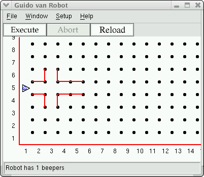
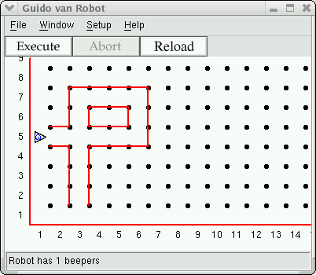

You can now program Guido to move around, pick up beepers, and drop them off
anywhere in his world. To make his world more interesting, we will add walls
to the world file that Guido will have to avoid. If Guido is about to run into
a wall, he does an error shut-off and your program stops. This behavior is
built-in to the robot. If he is asked to do anything he cannot do, he shuts
down. For example, if you tell him to pick up a beeper that isn't there, he
shuts off. The same goes for put_beeper -- he shuts off if he
doesn't have any in his beeper-bag. So be careful and don't ask the robot to
go into a wall!
Here is an example of a world file with walls:
Robot 1 5 E 1 Wall 2 4 N Wall 2 4 E Wall 3 4 E Wall 4 4 N 2 Wall 2 5 N Wall 2 6 E Wall 3 6 E Wall 4 5 N 2
The format of a Wall descriptor is:
1st number: avenue 2nd number: street 3rd number: intersection blocked to (N)orth, (S)outh, (E)ast, or (W)est 4th number: (optional) wall length (extending East or North)
Using this world file, GVR's graphical display starts like this:

Modify the world file to change Guido's world such that his path is completely enclosed as shown in this diagram.

The default length of a wall section is one block, but you can use an optional
4th number to make the wall section as long as you wish. Lengths always extend
in either the North or East direction. That means there are two ways to
describe a given section of wall. The longest section of wall in the example
above could be written as either Wall 3 7 N 4 or
Wall 3 8 S 4.
You will find it much easier if you use a piece of grid paper to sketch the world and then mark the intersections and walls' positions.
Put a robot with one beeper at the corner of 1st Avenue and 5th Street facing east as shown in the example world. In your program, he should go two blocks east, drop the beeper, and continue three blocks ahead. Facing a wall, he should turn left, go two blocks north, then three blocks west, then two south back to where he dropped the beeper. Then he picks it up and carries it three blocks south, drops it again, goes one more block and turns off.
To lay out your world grid, here is a printable map you may find useful.
Copyright © 2003 Roger Frank.